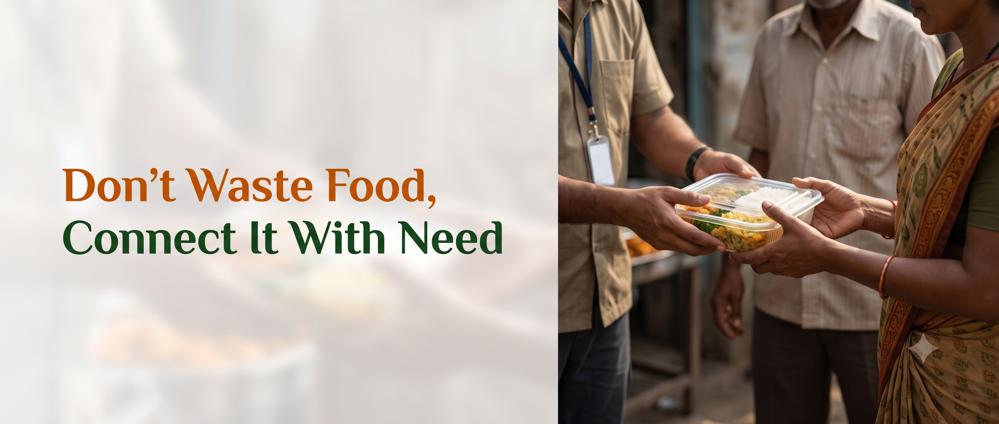

A platform that connects surplus food with social organizations, helping reduce food wastage, food provider money loss and feed those in need.
About-
Food wastage has emerged as a pressing global issue, with a significant proportion of food produced for human consumption being discarded before it reaches those in need. Studies on food wastage in the hospitality and event sector indicate that restaurants, marriage halls and community messes are among the largest contributors to surplus food generation, largely due to overestimation of guest requirements and inconsistent demand forecasting. Several food donation initiatives have been introduced in different regions to address this problem. Many of these initiatives rely on manual coordination, where volunteers or NGO representatives personally contact food providers through phone calls or informal networks to arrange pickup. While such efforts have had a positive social impact, they are often limited by inconsistent communication, delayed response times and lack of proper record keeping. A review of existing solutions shows that most current systems are either localised to a single city, dependent on manual intervention, or lack a structured digital interface that allows both food providers and NGOs to interact in real time. Some mobile applications exist for food donation, but they are often restricted to specific regions or organisations, limiting their scalability and accessibility to smaller food providers such as local messes and community halls. These limitations indicate a clear research gap: the absence of an accessible, easy-to-use, and centralised digital platform that can connect a wide range of food providers with multiple NGOs simultaneously. The proposed platform addresses this gap by offering a simple web based system that standardises the process of food listing, request generation and confirmation, thereby reducing dependency on informal coordination and improving the overall efficiency of food redistribution efforts.
Why Sevam?
- Reduces Food Wastage
- Helps NGOs
- Benefits Food Providers
- Supports a Happier Society